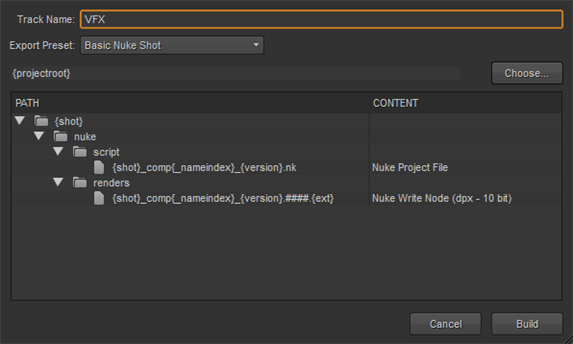
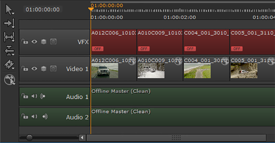
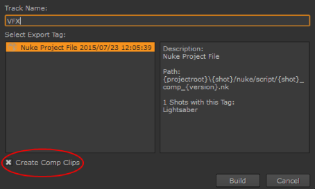
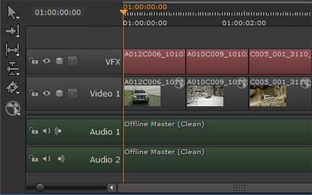
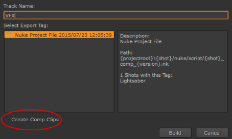
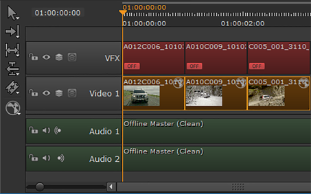

合成工作完成后，剪辑就可以重新摄取了。快照模板定义了 Nuke 文件的位置，所以你只需要指示 核武器工作室 从以前的出口建立轨道。请参阅 从出口结构建立轨道 欲了解更多信息。
或者，如果您有渲染的 VFX 剪辑、不同版本等的历史，您也可以从导出标签构建轨迹，以便从可用剪辑列表中进行选择。此方法允许您添加 Comp 剪辑 到时间线，作为容器 核武器 。Nk 脚本或占位符 核武器 渲染。请参阅 从导出标签构建 Comp 剪辑 或 从导出标记构建渲染占位符 欲了解更多信息。
| 1。 | 在时间轴上选择所需的剪辑，然后单击鼠标右键以显示上下文相关菜单。 |
提示: 您可能会发现在电子表格中选择剪辑，然后在时间轴上单击鼠标右键更容易。
| 2. | 单击 建立轨道 > 从出口结构 . |
的 从导出结构构建跟踪 对话框显示。

| 3. | 输入一个 曲目名称 或使用默认 VFX . |
| 4. | 选择一个 导出预设 使用下拉菜单。在这种情况下，选择导出过程中使用的相同预设。 |
| 5. | 输入的文件路径 出口根 目录或单击 选择 并浏览到该位置。 |
注意: 根目录是输入的位置 导出到 导出项目时。
| 6. | 选择要从快照模板中摄取的内容预设。在这种情况下, 核写入节点 . |
| 7. | 单击 构建 创建 VFX 轨道。 |
注意: 核武器工作室 警告您，如果没有选择 内容 列。
核武器工作室 自动创建包含 VFX 剪辑的新轨迹 (如果存在)，如果剪辑是正在处理的，则创建脱机放置夹。
如果任何目标轨迹中已经存在剪辑实例，将创建一个新轨迹来容纳新的剪辑实例。

剪辑在工作完成时会自动更新，只要它们按照快照模板中指定的预期名称和位置保存。
当您从出口标签建立轨道时, 核武器工作室 进口样夹含 核武器 默认情况下，脚本。Comp 剪辑是引用的剪辑实例 核武器 脚本，而不是离线剪辑的占位符，如 从导出标记构建渲染占位符 工作流。
| 1. | Select the required clips on the timeline and right-click to display the context sensitive menu. |
TIP: You may find it easier to select clips in the spreadsheet and then right-click on the timeline.
| 2. | 单击 建立轨道 > 从出口标签 . |
的 从导出标记生成跟踪 对话框显示。
| 3. | Enter a Track Name or use the default VFX . |
| 4. | 在左侧面板中选择所需的导出标记，以在右侧面板中显示标记信息。 |
核武器工作室 进口的 。Nk 默认情况下，Comp 剪辑。

如果您只想在离线渲染完成后导入它们，请禁用 创建 Comp 剪辑 复选框。请参阅 从导出标记构建渲染占位符 欲了解更多信息。
| 5. | 单击 构建 创建 VFX 轨道。 |
核武器工作室 自动创建包含 Comp 剪辑的新轨迹。如果任何目标轨迹中已经存在剪辑实例，将创建一个新轨迹来容纳新的剪辑实例。

| 6. |
您可以双击 Comp 剪辑以在中打开它们
|
从导出标记生成轨迹时，可以选择从中导入渲染。 Nk 脚本，而不是比较片段，它包含 核武器 脚本。
| 1. | Select the required clips on the timeline and right-click to display the context sensitive menu. |
TIP: You may find it easier to select clips in the spreadsheet and then right-click on the timeline.
| 2. | Click Build Track > From Export Tag . |
The Build Track From Export Tag dialog displays.
| 3. | Enter a Track Name or use the default VFX . |
| 4. | Select the required export tag in the left-hand panel to display tag information in the right-hand panel. |
| 5. | 禁用 创建 Comp 剪辑 复选框，用于在脱机渲染完成时导入它们。 |

如果你想导入 。Nk Comp 剪辑，启用 创建 Comp 剪辑 复选框。请参阅 从导出标签构建 Comp 剪辑 欲了解更多信息。
| 6. | 单击 构建 创建 VFX 轨道。 |
Nuke Studio automatically creates a new track containing the VFX clips, if they exist, or offline place holders if the clips are a work in progress.
If a clip instance already exists in any of the target tracks, a new track is created to hold the new clip instances.

|
|